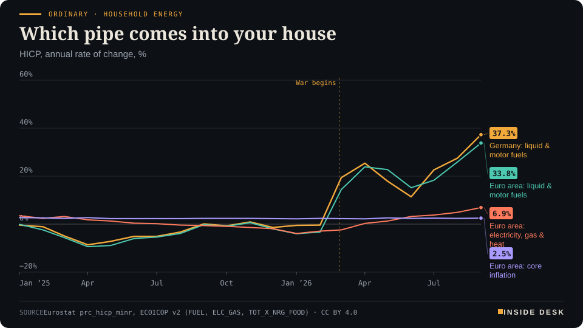
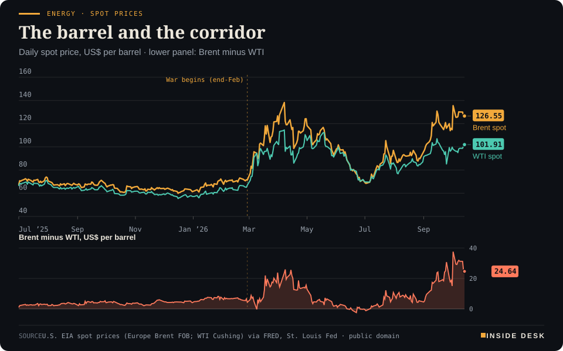
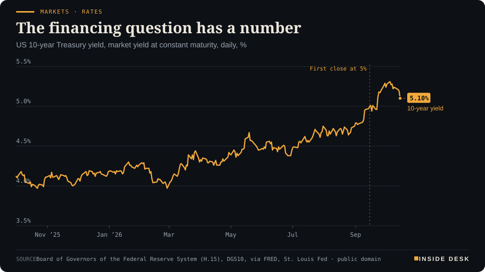
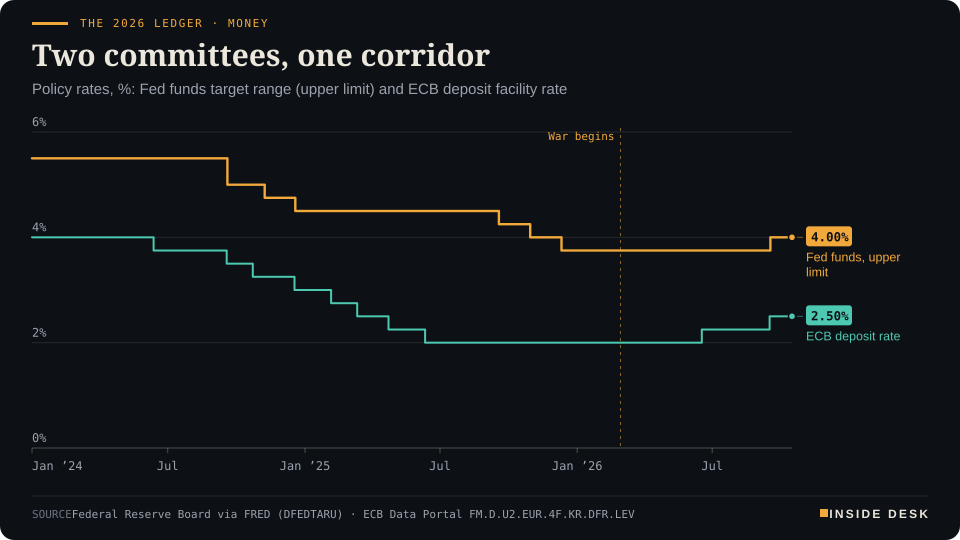
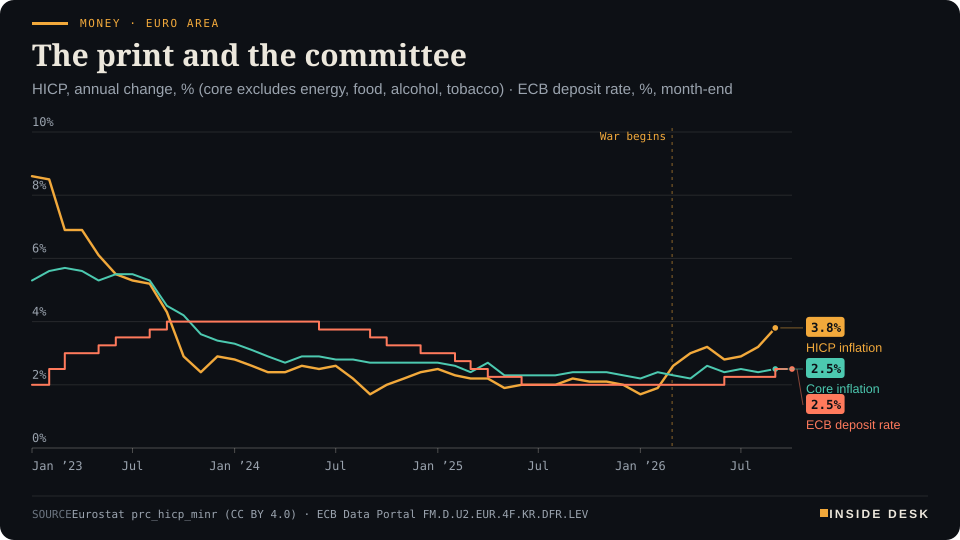

Inside Desk ePaper, Sunday Magazine · Sun 18 Oct 2026
Sunday, 18 October 2026Always free
Inside Desk
The Sunday MagazinePublished 10:00 CEST · Berlin
Cover story · Ordinary & Inherited Life
The barrel moved first, the pump second, the stockpile third, the committees fourth and the podium last. The household pays at step two and is consulted at step five.
Brent closed the week at $109.86 and diesel at the German pump at €2.247. The committees waited, on purpose, and Tehran's seven-day plan arrived after the screens went dark. Eleven desks, one sequence, every number sourced.
Ordinary · Household energyWhich pipe comes into your houseHICP, annual rate of change, %

Line chart of annual price changes since January 2025. Liquid and motor fuels fall by up to about 9% a year in spring 2025, then jump after the war begins, reaching +33.8% in the euro area and +37.3% in Germany in September 2026. Electricity, gas and heat rise far less, to +6.9%, and core inflation stays near 2.5%.
Source: Eurostat prc_hicp_minr, ECOICOP v2 (FUEL, ELC_GAS, TOT_X_NRG_FOOD) · CC BY 4.0 · CSV
Geo-economics · p. 5
Markets & Macro · p. 7
Energy & Industry · p. 10
Climate & Weather · p. 16
The week in one sentenceOil got dearer again by Friday, the central banks chose to wait for wages, and Brazil cut the clearing of its rainforest to the lowest level in nearly forty years.
ContentsInside Desk · Sunday Magazine18 October 2026
Brent closed the week at $109.86 and diesel at the German pump at €2.247. The committees waited, on purpose, and Tehran's seven-day plan arrived after the screens went dark. Eleven desks, one sequence, every number sourced.
11 edition pieces · 11 desks · Published 10:00 CEST, 18 October 2026
25 ePaper extras, added , 18 October. They appear only in the ePaper and carry their own time.
17:30 Evening ePaper, updated live until 22:30 with an “Updated” time and a Latest page
Sun 10:00 The Sunday Magazine
Berlin time. Every issue is free.
How to read it
Swipe, use the arrow keys or the page strip. Tap any headline for the reading view. Press / to search, t for contents, +/− to zoom. Download the PDF.
The Sunday SequenceInside Desk · Sunday Magazine18 October 2026
Ordinary & Inherited Life · The Sunday Sequence · 4 min
The barrel moved first, the pump second, the stockpile third, the committees fourth and the podium last. The household pays at step two and is consulted at step five.
On Sundays the desk rearranges the week. Not by the size of the headline, but in the order the incentives actually moved: barrels, pumps, stockpiles, committees, podiums. The order matters more than any single number in it, because the order tells you who pays first and who speaks last.
1. The barrel moved first. By ADAC’s count, Brent closed on Tuesday at about $106 a barrel, up from a little over $100 the week before1. On Friday December Brent settled at $109.86, up 3.72% on the day and its highest close since mid-May; WTI rose 3.55% to $101.41, its first close above $100 in nearly a month2. Both had traded lower earlier in the session2. On Friday morning this desk wrote that the futures screen was pricing a calmer future than the physical tank. By the close the screen had walked some of the way towards the tank. That is what a gap closing from below looks like, and it is not the comfortable direction.
2. The pump moved second. ADAC’s weekly reading put diesel at €2.247 a litre, up 1.4 cents on the week, and Super E10 at €2.151, up 2.5 cents1. That is with the fuel-tax cut in place: since 1 October the energy tax on petrol and diesel is 14 cents lower, which ADAC puts at just under 17 cents a litre including VAT, until the end of December1. Relief is real. It is simply measured against a price you never get to see.
3. The stockpile moved third. On Thursday the International Energy Agency agreed to release more than 20 million barrels of diesel, with wholesale diesel above $200 a barrel in Singapore and around $220 in Europe and the US2. In the same week the agency said exports out of the Middle East had recovered to pre-crisis levels and that global oil storage was not tight, while also warning that the diesel shortage would persist well into next year2. Both statements can be true. Crude finds detours. Diesel has to be made, and a refinery is a factory, not a pipe.
4. The committees spoke fourth. In Bangkok on Friday, the Fed chair, Kevin Warsh, declined to signal anything: “I don’t prejudge meetings”3. On Saturday Christine Lagarde told the IMF’s steering committee that the energy shock is “too large to ‘look through’”, but that “a measured response remains appropriate”, and that wages have so far shown no material response4. Committees speak after prices on purpose. They are paid to wait for the second print, wages, not the first one, the barrel.
5. The podium came last. On Saturday Iran’s foreign minister said Tehran had sent Washington, through Qatar, a seven-day plan to reopen the Strait of Hormuz if its conditions were met. “The choice is now America’s,” he said5. The markets were closed. The first price to answer will be Monday’s, and it will answer in dollars, not adjectives.
The Sunday SequenceInside Desk · Sunday Magazine18 October 2026
Ordinary · Household energyWhich pipe comes into your houseHICP, annual rate of change, %
Line chart of annual price changes since January 2025. Liquid and motor fuels fall by up to about 9% a year in spring 2025, then jump after the war begins, reaching +33.8% in the euro area and +37.3% in Germany in September 2026. Electricity, gas and heat rise far less, to +6.9%, and core inflation stays near 2.5%.
Source: Eurostat prc_hicp_minr, ECOICOP v2 (FUEL, ELC_GAS, TOT_X_NRG_FOOD) · CC BY 4.0 · CSV
Where the household sits. Between step two and step four. You pay at the pump before any committee has decided whether the pump matters. Eurostat’s September figures show the split inside one house: liquid and motor fuels up 33.8% on a year across the euro area, electricity, gas and heat up 6.9%, core inflation near 2.5%7. The pipe that comes into your house decides your month more than the average does. That is not a scandal; it is the design. A central bank that moved on every barrel would be a weather vane, and weather vanes are poor at keeping prices stable.
The constructive half. The same order works in reverse. Relief, when it comes, travels the same road: barrel first, pump after, committee later, podium claiming credit at the end. You do not need to guess when. You only need to know which number to watch first, and it is never the speech.
The Friday calls, scored. A desk that makes calls should keep the receipts.
“The screen is the forecast. The tank is the invoice.” Open. Futures rose towards spot by Friday’s close2, but the spot price for that day is not yet published. We will score it after the EIA release.
“The average stock had a better day than the index” (Thursday). Not repeated. On Friday slightly more than half of the stocks in the S&P 500 fell, and the index lost 1.1%6. It was a day, not a regime, and we said so too quietly.
“The committee is behind the print, on purpose.” Holding. Saturday’s statement says so in the committee’s own words: no evidence yet of significant pass-through to other prices and wages beyond what was already projected4.
None of this is advice. It is an order of events, and the order is the most honest thing the week produced.
Geo-economicsInside Desk · Sunday Magazine18 October 2026
Geo-economics · Podium vs Print · 2 min
A plan with a date in it is better than a plan without one. The ships, meanwhile, are already working around the strait.
Podium
“We conveyed a specific seven-day plan … The choice is now America's.”
Abbas Araghchi, Iran's foreign minister, 17 October 2026
Print82
ship-to-ship transfers in India's Gulf of Kutch in one month, about 680,000 barrels a day moved off the usual route.
Vortexa data, cited by The National, September 2026
The podium, in its own words. On Saturday Abbas Araghchi said Tehran had sent Washington, through Qatar, “a specific seven-day plan”: if Iran’s conditions are met, the strait can reopen and normal traffic resume within seven days. “The choice is now America’s,” he said1. He also said US military action had prevented implementation of the June memorandum of understanding1. An Iranian lawmaker told local media that indirect talks were continuing through Qatar and Oman, and that both sides had exchanged conditions3.
The print. The market has not been waiting. Gulf producers have pushed tanker transfers as far as India’s coast: Vortexa counted 82 ship-to-ship transfers in the Gulf of Kutch last month, equivalent to about 680,000 barrels a day, roughly two-thirds of it refined products2. The IEA says exports out of the Middle East have recovered to pre-crisis levels through this makeshift network, even as it buckles under congestion and attacks2.
The gap. The plan has a date in it, which is more than most speeches offer, and dates bind in a way adjectives do not. But its conditions were not published, and a deadline whose terms you cannot read is only half a sentence. The detour, by contrast, is fully legible: it has a location, a count and a volume.
Verdict. Not a contradiction, a sequence. The podium describes a door; the print describes people already climbing through a window. If the door opens, the window gets quieter and cheaper. …
Geo-economics · Second story · ePaper extra, added
China's September trade numbers beat every forecast. Read the value and the volume separately and the AI boom shows up as a price, not a pile of boxes.
China’s exports rose 36.3% in September from a year earlier, their fastest pace since February, and imports rose 31%. Both beat the forecasts in a Reuters poll, of 25.5% and 24.5%1. The trade surplus came to $133.5 billion, which Hao Zhou of Guotai Junan International called “a record monthly high”1. Exports to the United States grew by nearly 39.6%1.
One line in the data does most of the explaining. The value of China’s integrated-circuit exports rose 136% on the year, while the number of units exported rose 1%, according to CNBC’s calculations from official figures1. That is a price story. The world is paying far more for roughly the same number of chips because the chips now go into data centres.
Cars are the volume story. Vehicle exports rose 56.3% to 1.18 million, and their value rose 62%1. The crude side runs the other way: the volume of China’s crude oil imports fell by double digits for a sixth straight month, even though their value rose for the first time since May1.
Put the two together and the surplus looks less like strength and more like exposure. China is selling the expensive parts of other countries’ AI build-out, and buying less of the oil that the war has made dear. If the debt-financed corner of that build-out slows, as this week’s bond market suggested it might, the most cyclical line in this report is also its biggest.
The data do not tell you what Beijing will do with the surplus. They tell you why Brussels and Washington spent the week talking about it.
Geo-economicsInside Desk · Sunday Magazine18 October 2026
Geo-economics · Short item · ePaper extra, added
EU leaders want new trade defences against Chinese overcapacity, starting with chemicals and machinery. The deficit is the reason, the timetable is the question.
At their summit on 15–16 October, EU leaders pressed the Commission to prepare new trade defence instruments, including safeguards with quotas and tariffs, to protect the chemicals and machinery industries from Chinese competition, Euronews reported1. The bloc runs a trade deficit of about €360 billion with China, and Chinese customs data show exports to the EU up 25% over the past year1.
“The toolbox will be bigger. It will also be applied as necessary,” Chancellor Friedrich Merz said1. Ursula von der Leyen told leaders the Commission would begin work on such a tool. It is unclear whether it will be ready before the end of the year1.
Last week’s deal with Beijing on hybrid-car exports was negotiated; this would be unilateral. A safeguard has a date, a quota and a tariff. Until those three exist on paper, the toolbox is a podium item.
Geo-economics · Brief · ePaper extra, added
President Trump said Russia would supply 300,000 metric tons of diesel to the world market1. EU Commissioner Valdis Dombrovskis said the volumes are “not going to have any macroeconomic significance”1. The IEA said Russia’s real limit is refinery capacity damaged by drones, not export rules2. Desk arithmetic: at about 7.45 barrels a tonne, that is roughly 2.2 million barrels, about three days of September’s 700,000-barrel-a-day fall in global diesel exports2.
Markets & MacroInside Desk · Sunday Magazine18 October 2026
Markets & Macro · 2 min
A 2% drawdown is a mood. Who fell, and who did not, is the information.
The S&P 500 fell 1.95% on the week to 7,659.44, its largest weekly percentage fall since the week ending 26 June, according to Dow Jones Market Data1. Friday alone took 1.09%. The index is now 2.04% below the record close of 7,818.93 set on Tuesday, 6 October, and has fallen on six of the last eight trading days1.
Keep the scale in view. The same data show the index still up 11.89% this year and 11.35% since the war began on 28 February1. A record nine trading days old is not a crash; it is a high-water mark the market has stepped back from.
The composition is the story. The Nasdaq Composite lost 4.5% on the week, while the Dow industrials still rose2. The Wall Street Journal put CoreWeave at the centre of the week’s tech rout, with investors worried about what higher borrowing costs do to the most leveraged players in the data-centre build-out2. Friday’s damage was broad but not total: slightly more than half of S&P 500 stocks fell3.
So money did not leave the market. It moved from the companies that need financing towards the ones that send invoices and collect them. That is the dull machinery working: a rising cost of money sorting balance sheets, one bond yield at a time.
Markets & Macro · Short item · ePaper extra, added
The STOXX 600 posted its best week since early July while the S&P 500 posted its worst since June. Same news, different balance sheets.
The STOXX Europe 600 rose 2.09% on the week to 644.74, its largest weekly gain since the week ending 3 July, according to Dow Jones Market Data. It still sits 2.39% below its record close of 660.51 from 11 August1. Over the same five days the S&P 500 fell 1.95%3.
Frankfurt shows where the money went. The DAX closed Friday at 25,622.61, up 0.95% on the day and 2.13% over five days. …
Markets & Macro · Short item · ePaper extra, added
An index provider proposed moving a G20 stock market out of the emerging-market club. The complaint is not growth. It is plumbing.
On 15 October MSCI opened a consultation on reclassifying the MSCI Indonesia Indexes from Emerging Market to a Standalone Market. Feedback runs until 30 April 2027, and a decision is due on or before 30 June 20271. The freeze already in place stays: no increases to foreign inclusion factors or share counts, no additions to the investable market index and no upward moves between size segments1.
Markets & Macro · Brief · ePaper extra, added
The dollar index fell 0.26% on Friday and was on track for its first weekly decline after four weeks of gains, as lower Treasury yields made it less attractive. The euro rose 0.16% to $1.1238, up from its recent 17-month low. Gold added 0.07% to $4,167.14 an ounce1. A week of fear about AI debt ended with money in bonds and bullion, not in the dollar.
Politics & InstitutionsInside Desk · Sunday Magazine18 October 2026
Politics & Institutions · 2 min
The IMF's Bangkok meetings closed with a sentence worth framing, and a warning about standing on one leg.
The IMF and World Bank Annual Meetings closed in Bangkok on Saturday. The chair’s statement opened with a line that suits this desk: the global economy “has weathered the latest in a series of shocks better than expected, but continued resilience should not be taken for granted”2.
Kristalina Georgieva’s summary was sharper. Members recognised that investment in good policies and institutions has anchored the global economy: “resilience doesn’t fall from the sky”1. She also warned that relying on the AI boom as the main source of support is a risk, “like we stand on one leg”1.
Her second point was divergence. Energy-importing countries that are not part of the AI value chain are “falling further behind”, and from a position of vulnerability to begin with1. The committee’s chair, Saudi finance minister Mohammed Aljadaan, asked fiscal authorities for credible medium-term plans to rebuild buffers while protecting vulnerable people and growth-enhancing investment3.
None of that will move a market on Monday. It is not meant to. A communiqué is a to-do list that finance ministries take home, and the constructive part is that the list is boring: buffers, debt plans, supervision. Boring lists, kept, are how the last shock was weathered.
Politics & Institutions · Second story · ePaper extra, added
The EU's next seven-year budget left the summit without agreement. What changed is who holds the pen and when the next deadline falls.
EU leaders spent much of Thursday on the 2028–2034 budget and, as expected, made little headway, Euronews reported. The net contributors and the “Friends of Cohesion” from the south and east dug in1.
Two things did change. The negotiating box tabled by the Irish presidency a few days earlier, which proposed cutting €141 billion from the overall budget to win over the net contributors, is “now officially dead”1. And European Council President António Costa will take over the talks. He is due to present a new compromise in the coming weeks, which many expect before the special summit he has called for 26 November1.
Euronews expects Costa to pursue three lines: keep national contributions as low as possible, rework the package of EU-wide taxes and restore the flexibility instruments the Irish draft cut1. The more worrying sentence comes from the leaders themselves: on both sides, they say openly that they feel no pressure to close the deal by the end of the year1.
This desk’s rule for budgets is the same as for central banks. A process with a named owner and a date is better than one without. As of Friday this one has both, Costa and 26 November, and one thing it lacks: a cost to missing the date. Without that, no one is forced to give ground first.
For households the stakes are slow but real. The seven-year budget is where cohesion money, farm support and the EU’s share of energy and defence spending are fixed. A late deal will not change your gas bill this winter. It decides who pays for the next one.
Italy’s temporary border controls were due to expire on Thursday evening. Rome extended them by a week to line up with Spain’s, which expire on 22 October, and the two interior ministers are due to agree replacement measures by then, Euronews reported1. Two governments that were trading checks now share a deadline. That is not a solution, but it is the shape most solutions take first.
Psychology & BehaviourInside Desk · Sunday Magazine18 October 2026
Psychology & Behaviour · 2 min
American consumers marked today down sharply and tomorrow up slightly. The screen and the tank, again, in survey form.
The University of Michigan’s preliminary October survey put consumer sentiment at 46.3, down from 48.1 in September and 53.6 a year ago1. That headline hides a split worth naming.
Current economic conditions fell 12.2% in a month, to 44.7. Consumer expectations rose 2.2%, to 47.31. People rate today worse and the months ahead slightly better. It is the same shape as this week’s oil market: an expensive present and a hoped-for calmer future.
The survey’s director, Joanne Hsu, said buying conditions for durable goods “plummeted amid high prices and borrowing costs”, and that sentiment fell steeply among lower-income consumers and those with smaller stock portfolios, the groups with fewer resources to absorb price rises1.
The figure committees will read twice is inflation expectations: 4.7% for the year ahead and 3.5% for the long run, both the highest since May1. Expectations are a behaviour, not a feeling. People who expect prices to rise ask for raises and buy early, which is why central banks guard this number more carefully than any podium line. The constructive read: the long-run number rose by a tenth of a point in a month, from 3.4% to 3.5%1, not by a full point. The public is pricing a shock, and not yet a spiral. That is a sensible public.
Psychology & Behaviour · Short item · ePaper extra, added
R+V's annual fear survey found worry about the cost of living at the top for the 16th time. The sharpest rise was in fear of recession.
In R+V’s long-running study “Die Ängste der Deutschen”, 59% of respondents fear that living costs will rise sharply, up seven points from 52% in 2025. It is the top fear for the 16th time in 35 surveys1. Fear of tax rises or benefit cuts came second at 53%, and fear of a worse economy rose ten points to 51%, the largest increase of any worry1.
Two numbers point the other way. Only 20% of people in work fear losing their job, the lowest since the question was first asked in 1992. And the average across all fears is 38%, only two points above the calmest year on record, 20211. Interviews ran from 11 May to 29 July 2026 with about 2,400 people1.
So Germans are not panicking. They are adding up the bills. A population afraid of prices but not of unemployment is telling you where the pressure sits: in the shopping basket, not on the payroll.
Psychology & Behaviour · Short item · ePaper extra, added
American individual investors grew a little gloomier. The more useful number is how few of them changed anything.
In the latest AAII Sentiment Survey, bearish sentiment rose 2.6 points to 41.6%. That is above its historical average of 31.5% for the 36th consecutive week. Bullish sentiment fell 1.5 points to 38.7%, and neutral sentiment, at 19.7%, has been below average for 32 weeks running1. The bull-bear spread is −2.91.
The survey’s special question asked members how their approach had changed lately. 35.3% said they had become slightly more conservative and 6.6% much more so. 21.3% had made only modest changes, 4.9% had become more aggressive and 32.0% had changed nothing1.
That is the behavioural point. Thirty-six weeks of above-average pessimism and the largest group still made small adjustments or none. Mood is loud; behaviour is sticky. Read sentiment polls as weather, and your own plan as climate.
Energy & IndustryInside Desk · Sunday Magazine18 October 2026
Energy & Industry · 2 min
EU gas storage enters winter at 74%. The average is a comfort; the spread between countries is the work.
EU gas storage was 74.3% full on 16 October, about 842 TWh, according to GIE’s AGSI+ data as compiled by GasRadar1. GIE’s platform reports daily for every underground store in the EU2. That is the number that will be quoted all winter.
Look under it. On the same data Italy was 89.5% full and France 87.4%, while Germany stood at 60.7%1. A comfortable-looking average can sit on top of a thin national number, and a thinner store means leaning harder on daily imports through the winter. European LNG terminals sent out about 3,610 GWh a day on 16 October1: ships, not caverns, are the margin this winter.
On the oil side, the IEA said this week that the diesel shortage triggered by the war would persist well into next year3. Gas and diesel are different molecules with the same lesson: a stock is a buffer you build in summer and spend in winter, and the bill for a thin buffer arrives as a price, not as a shortage.
The constructive part is that this is the most transparent energy system Europe has ever run. Every store reports daily, in public, for free. You can watch the winter being spent one gas day at a time, which is more than any podium will tell you.
Energy & Industry · Second story · ePaper extra, added
The IEA's October report moved the end of the diesel squeeze into the second half of next year. The reason is arithmetic, not panic.
The International Energy Agency’s October Oil Market Report says the global diesel and gasoil market will stay tight “well into 2027”. Even with refinery runs recovering quickly towards year-end, gasoil supply falls short of demand in the fourth quarter, so rebuilding lost stocks “is unlikely before 2H27”1.
The numbers behind that sentence are plain. Global diesel exports in September were 700,000 barrels a day lower than a year earlier. A loss of 1.3 million barrels a day from Russia and the Middle East was only partly offset by other suppliers1. Wholesale diesel topped $200 a barrel in Singapore in mid-September and reached all-time highs of around $220 in Europe and the United States1. Prices have eased since, but benchmarks “remain nearly double the price of crude oil and their pre-crisis levels”1.
Refineries are the bottleneck. Global runs are set to hit a seasonal low of 81.3 million barrels a day in October, during autumn maintenance, before rebounding to 84.6 million by year-end1. Diesel demand, the IEA notes, is “relatively price inelastic”: lorries, tractors and buses keep running when the price rises, helped by government relief measures1.
That is why the German pump moves the way it does. ADAC’s weekly average put diesel at €2.247 a litre2. A tax cut can lower that number at the margin; it cannot add a refinery. The IEA also warns that delivered diesel prices in importing regions, Europe among them, could rise again in the coming weeks as freight costs climb1.
The useful habit here is to watch capacity, not headlines. A ceasefire that lasts four days does not refill a tank farm. A refinery that comes back from maintenance does, slowly, one cargo at a time.
Energy & Industry · Short item · ePaper extra, added
Targeted, temporary, coordinated: the leaders' energy language was familiar. The new line was about refineries.
After talks that ran into Thursday night, EU leaders called for a coordinated response to the energy crisis and asked the Commission for targeted, temporary measures for households and businesses, including extending support to the hardest-hit industries, Euronews reported1. …
Energy & Industry · Brief · ePaper extra, added
Global observed oil stocks fell by only 10 million barrels in September, the IEA says, because a surge in oil on water largely offset a further 113-million-barrel drop on land1. On-land stocks are at their lowest since at least 2016, and global inventories ended September 509 million barrels below their end-February level1. Oil in transit is a promise; oil in a tank is cover.
Money, FX & CommitteesInside Desk · Sunday Magazine18 October 2026
Money, FX & Committees · 2 min
Warsh would not pre-announce. Lagarde would not look through. Both told you how they decide, which is more useful than what they will decide.
Kevin Warsh used a fireside chat in Bangkok to decline the one thing markets wanted. “I don’t prejudge meetings,” the Fed chair said, adding that forward guidance is a business the Fed is “not in … anymore”1. He described “a synchronous tightening in monetary policy in most places around the world”, which means “there’s no free riders”1. The Fed raised its range to 3.75–4% last month; CME FedWatch showed traders pricing a 72.3% chance of no change at the 27–28 October meeting1.
Christine Lagarde’s statement to the IMF’s steering committee was the European version, in writing. The ECB raised rates by 25 basis points in June and again in September2. Headline inflation was 3.8% in September and core 2.5%, and wages “have so far shown no material response to the energy shock”2. Financing conditions have tightened, with long-term rates rising notably, which “will slow growth and reduce pass-through” more than projected in September2.
Read the two together and the method is the message. Both central banks are saying: the bond market has already done some of our work, wages have not yet moved, so we will look at the data rather than at you. The ECB’s next decision comes on 29 October, after a two-day meeting in Frankfurt3.
For you, the useful part is that this is not a mystery. The ECB publishes its three criteria: the inflation outlook, underlying inflation, and how strongly policy is getting through2. Watch those three and you will not need the podium.
Money, FX & Committees · Short item · ePaper extra, added
US consumer prices rose 0.6% in September. Petrol did more than half the work; the core rose at the same pace as in August.
The US consumer price index rose 0.6% in September on a seasonally adjusted basis, after 0.4% in August, and 3.7% over twelve months, up from 3.4%1. The gasoline index rose 9.1% in the month and accounted for over half of the overall increase. Energy prices are up 20.4% on the year1.
Without food and energy the picture is calmer, but not calm. Core prices rose 0.3%, as they did in August, and 2.6% on the year, up from 2.4%1. Shelter rose 0.4%. Food was unchanged on the month1.
Traders raised their bets on further US rate rises after the release on Wednesday2, and on Friday Fed Chair Kevin Warsh declined to signal his next move3. A committee can look through a petrol spike for a while. It cannot look through a core rate that keeps rising. The October figures are due on 10 November1.
Money, FX & Committees · Short item · ePaper extra, added
The Bank of England held at 3.75% in September with three votes for a hike. Britain's September inflation figure arrives on 21 October.
At its September meeting the Bank of England’s Monetary Policy Committee voted 6–3 to keep Bank Rate at 3.75%; the three dissenters wanted 4%1. UK CPI inflation had risen to 3.1% in August and is “likely to rise further over coming quarters”, the Committee said. It judged the risks to the inflation outlook “tilted to the upside”1. The next decision is due on 5 November1.
The Office for National Statistics publishes September’s inflation figure on 21 October at 07:00 UK time, 08:00 in Berlin2.
A 6–3 vote is a committee with its hand on the door. The question for Wednesday is not whether inflation went up; the Bank already expects that. It is whether anything outside energy moved with it.
Ordinary & Inherited LifeInside Desk · Sunday Magazine18 October 2026
Ordinary & Inherited Life · Short item · ePaper extra, added
Germany's social-insurance ceilings rise with last year's wages. Most payslips will not notice. Higher earners will.
On 7 October the federal cabinet set the social-insurance figures for 2027. The contribution ceiling for pensions and unemployment insurance rises to €8,850 a month (€106,200 a year), and the ceiling for health insurance to €6,375 a month (€76,500 a year)1. The figures follow wage growth in 2025 of 4.38%1. The health-insurance ceiling and the compulsory-insurance threshold also rise by an extra €300 a month on top of that, as the law requires2.
The ministry’s own sentence is the useful one: only people who already earned above these limits are affected, and for the large majority of insured people “nothing changes”1. The Bundesrat still has to approve the regulation1.
If your gross pay is below €6,375 a month, this is background. If it is above, your January payslip will show it. Note it now rather than in January.
Ordinary & Inherited Life · Brief · ePaper extra, added
Germany’s GKV estimating group expects the average extra contribution rate to stay at 2.9% next year. Spending growth should fall below 3%, after nearly 7% this year, the health ministry says1. The ministry announces the official average by 1 November1. Each insurer then sets its own rate, so the letter from your Krankenkasse in December is the number that counts.
Tech & ComputeInside Desk · Sunday Magazine18 October 2026
Tech & Compute · 2 min
CoreWeave's default insurance hit distress levels while its order book sat above $100 billion. Both numbers are true; the bond market chose which one to price.
This week the AI build-out met its oldest constraint: the cost of waiting to be paid. CoreWeave, a so-called neocloud that rents out computing power, has taken on more than $51 billion of debt and obligations to fund its build-out1. On Thursday the yield on its 9.75% bond due 2031 reached 15.78%, and the spread on its five-year credit default swaps, insurance against default, briefly went above 1,140 basis points before settling near 1,0381. S&P Global Market Intelligence’s Gavan Nolan said a spread of 1,000 basis points or more is generally a sign of credit distress1.
The counter-argument is a big number. The company’s backlog is over $100 billion, about two-thirds of it with investment-grade customers, Deutsche Bank said1. Nolan’s point was that no one doubts the demand; “the question is whether the cash flows will ultimately arrive”1. A backlog is a promise to pay later. A bond coupon is due on a date.
The stress travelled. Oracle’s five-year spread rose about 10% on the week, to around 282 basis points1, and the Journal said investors were fretting over how higher borrowing costs hit the most leveraged players in the data-centre build-out2.
The constructive read: this is markets doing their job early. Pricing financing risk while the chips are still in demand is far cheaper than discovering it after the build-out. The machines are real; the invoices will decide who owns them.
Tech & Compute · Short item · ePaper extra, added
The maker of the machines behind the chips expects its planned output for 2027 and 2028 to fall short. Some customers are asking about 2030.
ASML reported record third-quarter net sales of €11.7 billion, a gross margin of 57.5% and net income of €5.0 billion1. It expects fourth-quarter sales of €14.2 to €15.2 billion and full-year sales of €44 to €45 billion1.
The sentence that matters is about capacity. Customers keep raising their equipment forecasts, and “some customers are expressing an interest in placing orders with us for 2029 and even 2030,” chief executive Christophe Fouquet said1. ASML now expects that its supply “as currently planned for both 2027 and 2028 will not fully meet the demand”, and is looking at adding capacity for 2028 beyond the 30% increase it had already announced1.
A shortage of machines is a European bottleneck in an American and Asian boom. It is also a natural brake: no one can build the AI capacity faster than lithography tools ship.
Tech & Compute · Short item · ePaper extra, added
While the market priced the debt of AI landlords, the factory that makes the chips reported a 51% net margin.
TSMC reported third-quarter revenue of NT$1,494.24 billion, up 50.9% on the year, or $46.72 billion in dollar terms. Net income rose 68.7% to NT$763.06 billion1. Gross margin was 66.4%, operating margin 58.7% and net margin 51.1%1. Chips of 7 nanometres and below made up 79% of wafer revenue, with 2-nanometre already at 8%1.
The guidance points up again: fourth-quarter revenue of $52.3 to $54.3 billion, with the chief financial officer expecting “the steep ramp-up” of 2-nanometre technology1.
Set this next to this edition’s tech note on CoreWeave. The AI build-out has invoices and it has IOUs. In the week the bond market marked the IOUs down, the biggest invoice in the chain was paid in full, with margin to spare. That is not a contradiction. It is a reminder to ask which end of the chain a company sits on.
Health & CareInside Desk · Sunday Magazine18 October 2026
Health & Care · 2 min
No cases in the WHO's eastern Mediterranean region, and 22 countries preparing as if there might be. That is what prevention looks like from the outside: nothing.
The World Health Organization is stepping up Ebola preparedness across its eastern Mediterranean region, 22 countries and territories spanning parts of Africa, Asia and Europe, with priority support for Djibouti, Somalia and Sudan1. It follows deadly outbreaks caused by the Bundibugyo virus in the Democratic Republic of the Congo and Uganda, and a confirmed case in Kenya linked to the DRC1.
There have been no Ebola cases in the region so far1. Between July and September WHO sent missions to the three priority countries to test surveillance, laboratories, infection control, case management and emergency coordination, and it is closing gaps with training, supplies and simulation exercises1.
The hard part is honest in the text: gaps remain in early detection, lab confirmation and protective equipment, and conflict and restricted access make everything harder in countries already in humanitarian emergency1. WHO’s Director-General, Tedros Adhanom Ghebreyesus, called the region “the epicentre of global humanitarian need” this week1.
This is the desk’s favourite kind of health story, because it is all machinery: checklists, contingency plans, traveller guidance, a simulation run before the real thing. It does not make headlines when it works, and that is the point.
Health & Care · Short item · ePaper extra, added
Kenya's second and third Ebola cases were already under daily checks when they fell ill. That is what a working response looks like.
Kenya confirmed its second and third cases of Bundibugyo Ebola on 14 and 16 October. Both patients are close family members of the country’s first case, a man who had travelled home from the Democratic Republic of the Congo and died on 5 October, the WHO says1. Both were already in quarantine when they fell ill1.
Health teams listed 130 contacts of the first case. By 16 October, 127 of them were in quarantine, with temperature and symptom checks every day for 21 days1. There is no licensed vaccine or specific treatment for Bundibugyo Ebola yet, so early supportive care matters1. “This is the response working as designed,” said Dr Patrick Amoth of Kenya’s health ministry1. The WHO advises against closing borders or restricting trade1.
Kenya has trained nearly 5,000 health workers since May1. Preparation is invisible until the week it is needed. Then it looks exactly like this: a short list, a daily check, and no surprises.
Health & Care · Brief · ePaper extra, added
INTERPOL and the WHO signed a cooperation agreement on 16 October. It covers falsified medicines, vaccines and devices, counterfeit protective equipment, organ trafficking, unusual biological events and health risks at mass gatherings1. “Health security is global security,” said WHO Director-General Tedros Adhanom Ghebreyesus1. A fake vaccine is a crime and a health threat at once, and now both agencies work it together.
Security & OrderInside Desk · Sunday Magazine18 October 2026
Security & Order · 2 min
A pause announced on 11 October lasted four days. The way to read it is not by the statements but by which units are running.
On 11 October the US president announced an “energy ceasefire” between Moscow and Kyiv. Ukraine paused refinery strikes, then lifted the pause on 15 October, President Zelensky said, citing continued Russian attacks on Ukraine’s grid1. That same day a drone attack hit Russia’s Ryazan refinery, and one of its main crude distillation units, CDU-6, stopped, Reuters reported, citing industry sources1.
The detail is in the unit numbers. CDU-6 had already been shut after a strike in September; the refinery’s three other primary units, CDU-1, CDU-3 and CDU-4, reportedly keep running1. The plant was also hit on 6 September and 15 May, and repairs after May lasted until around mid-July1. On 16 October, Zelensky said, Russia launched one of its largest attacks on Ukraine’s energy system, targeting more than 15 key facilities1.
This matters beyond the front line because diesel is the tightest part of the oil market. Days earlier Washington had lifted sanctions so Russia could supply diesel to global markets2, and a refinery under drone attack produces less of it, whatever is promised for export.
A second front runs through Saudi Arabia. The Saudi-led coalition said the Houthis attacked Riyadh’s King Khalid International Airport 20 times in October, and Saudi officials say at least 19 people have been killed in recent attacks across the kingdom3. Keeping the night boring is now a job done on two seas and one long front, and it is done by crews, not by statements.
Security & Order · Short item · ePaper extra, added
NATO's deputy secretary general framed Russia's hybrid campaign as an attack on cohesion. The spending goal is the answer in euros.
At the Warsaw Security Forum on 12 October, NATO Deputy Secretary General Radmila Shekerinska said: “Building stronger defences is our top priority at NATO.” That means investing 5% of GDP a year in defence, she said, adding that Europeans are spending a lot more, “but not yet enough”, with Poland leading by example1.
Her reading of Moscow’s hybrid campaign was blunt. Russia uses these attacks and threats because “they want to undermine our unity”; the result, she argued, is a “stronger NATO, committed to support Ukraine even more”1. She also said there is no strong defence without a strong defence industry1.
The desk’s translation: sabotage and drones are cheap ways to test whether 32 governments still agree. The 5% target is the expensive way of saying they do. Watch the budgets, not the panels.
Security & Order · Short item · ePaper extra, added
Zelenskyy asked EU leaders for another €70 billion next year. The plan had assumed last year's loan would cover two years.
At the EU summit, President Volodymyr Zelenskyy asked leaders for an additional €70 billion in financial and military support next year to counter Russia’s escalation, Euronews reported1. The request upends the bloc’s plans, which assumed last year’s €90 billion loan would cover both 2026 and 2027. Leaders asked the Commission to propose how to meet Kyiv’s needs1.
The leaders promised to keep sanctions in place for as long as Russia pursues its full-scale invasion, and condemned the US–Russia diesel deal, with Bulgaria’s prime minister breaking ranks1.
Filling the gap is the hard part. Soaring borrowing costs make joint debt unpalatable, the immobilised Russian assets remain divisive, and bilateral contributions risk leaving the burden on a few wealthy countries1. Security, again, is first a financing question.
Climate & WeatherInside Desk · Sunday Magazine18 October 2026
Climate & Weather · 2 min
Spain's first high-impact cut-off low of the season peaks today and tomorrow. The forecasts are written in litres per square metre, which is how a river sends its invoice.
Spain’s civil protection authority, working from the state weather agency AEMET’s forecasts, has kept an alert in place for very strong and persistent showers and thunderstorms along the Mediterranean coast and the Balearic Islands from Saturday to at least Monday, the first high-impact dana, an isolated upper-level low, of the season1. Sunday and Monday are expected to be the worst days1.
The numbers are written as water, not wind. Around Cabo de La Nao and the Pitiusas, Ibiza and Formentera, more than 150 litres per square metre could fall in 12 hours, with 80 litres possible along the coasts of Alicante, Murcia and eastern Catalonia; over the whole episode local totals of 150 to 300 litres are possible1. Soils already saturated by earlier rain raise the risk of flash floods in streams and ramblas, the dry riverbeds that fill in hours1.
It follows several days of temperatures that AEMET called anomalously high for the time of year; a cold front is due to bring them back to normal or slightly below1. Heat, then a deluge, then a chill: the season’s three invoices in one weekend.
The constructive part sits in the same document. It is a plain, public list of what to do: do not drive through flooded stretches, do not park in flood-prone spots, move essentials upstairs if you have to leave1. Warnings like this, issued two days ahead, are one of the most cost-effective things a state does.
Climate & Weather · Short item · ePaper extra, added
September was the second-warmest on record. The ocean numbers explain why the run above 1.5°C is expected to last into 2027.
September 2026 was the second-warmest September on record, at 16.27°C, 0.82°C above the 1991–2020 average and 1.63°C above the pre-industrial level, Copernicus reports. It is the second month in a row above 1.5°C1.
The ocean is doing much of it. The average sea surface temperature between 60°S and 60°N was a September record at 21.05°C. In the Niño 3.4 region, used to monitor El Niño, the monthly temperature reached an all-time high of 29.70°C, above the peaks of the very strong events of 1982/83, 1997/98 and 2015/161. Copernicus expects the run of months above 1.5°C to continue into 20271.
“How far we overshoot, and for how long, is still up to us,” said Carlo Buontempo, director of the Copernicus Climate Change Service1. A strong El Niño is weather on a planetary scale. The trend underneath it is not.
Climate & Weather · Brief · ePaper extra, added
Copernicus reports record-low September river flows in parts of the Rhine, the Danube, the Vistula and the Garonne-Dordogne. Low water disrupted shipping, water supply and farming in several countries1. Late-month rain brought some relief and also floods in parts of France and Spain1. Too little water, then too much at once, is how this Sunday’s storm Adam should be read too.
Weekend readingInside Desk · Sunday Magazine18 October 2026
Weekend reading
The 2026 Ledger
The year so far, month by month, in the order the invoices arrived.
3 January 2026 · Geo-economicsA president removed, a barrel unimpressedVenezuela changed hands over a weekend. The oil market read the supply sheet and went back to its glut. It was right about Venezuela, and about nothing that came next.
20 February 2026 · Politics & InstitutionsThe court sends the invoice backSix justices said a tariff is a tax, and taxes belong to Congress. The refund goes to whoever signed the customs entry, which is rarely the person who paid the higher price.
March 2026 · Energy & IndustryThe month a strait became a priceTwenty million barrels a day stopped moving, and the world's emergency cupboard opened wider than ever before. Both facts were true. Only one of them was a solution.
14 April 2026 · Markets & MacroA reference forecast is a hope with a footnoteThe IMF did not publish a baseline in April. It published a reference case and said, in plain print, that the world was drifting away from it. Read the footnote first.
22 May 2026 · Money, FX & CommitteesA new chair, the same arithmeticThe Federal Reserve changed its chair in the middle of an energy shock. If you expected the new face to bring cheaper money, the committee's next four months are the answer.
11 June 2026 · Money, FX & CommitteesFrankfurt raises into a supply shockThe textbook says look through an energy shock. The ECB chose not to, for the first time in this cycle, and said exactly why. The interesting word was 'robust'.
14 July 2026 · Security & OrderSixty days was the honest clauseA June memorandum promised safe passage through Hormuz, free of charge, for sixty days only. The price fell as if the strait had reopened. It had reopened on paper.
August 2026 · Geo-economicsSix months, five ships a dayHalf a year into the war, the strait carried a twentieth of its old traffic. The world adapted around it, by pipeline, by detour and by drawing down the cupboard. The cupboard was the part with a bottom.
10–16 September 2026 · Money, FX & CommitteesThe bypass breaks, both banks hikeIn one week the pipeline that carried Saudi oil around Hormuz was hit, the ECB raised rates and the Fed did the same. The Fed decided on the very day the ECB's increase took effect. The tank had made the argument for both.
13 October 2026 · Markets & MacroResilience is an inventorySix months after April's warning, the IMF's growth number had not moved and its inflation number had. The Fund's own explanation is a list of things that run down.
The week in desk comments
One line from each desk. Tap to read the piece behind it.
Ordinary & Inherited Life
Markets & Macro
Geo-economics
Politics & Institutions
Psychology & Behaviour
Energy & Industry
Money, FX & Committees
Tech & Compute
Health & Care
Security & Order
Climate & Weather
Data spreadInside Desk · Sunday Magazine18 October 2026
The week in data
Interactive: hover or tap for values, switch series on and off, change the time range.
Energy · Spot pricesThe barrel and the corridorDaily spot price, US$ per barrel · lower panel: Brent minus WTI

Line chart of daily Brent and WTI spot prices since July 2025. Both trade between roughly $55 and $74 until the end of February 2026, then jump; Brent spot peaks at $138.21 on 7 April and is $126.55 on 14 October, while WTI is $101.91. The lower panel shows the Brent–WTI gap widening from about $4 before the war to $24.64.
Source: U.S. EIA spot prices (Europe Brent FOB; WTI Cushing) via FRED, St. Louis Fed · public domain · CSV
Markets · RatesThe financing question has a numberUS 10-year Treasury yield, market yield at constant maturity, daily, %

Line chart of the daily US 10-year Treasury yield since October 2025. It is about 4% in late 2025, between roughly 4% and 4.7% through the spring, rises through the summer, closes at 5.00% for the first time on 15 September 2026, peaks at 5.31% on 5 October, is 5.19% on 14 October and 5.10% on 15 October, the latest value.
Source: Board of Governors of the Federal Reserve System (H.15), DGS10, via FRED, St. Louis Fed · public domain · CSV
Data spreadInside Desk · Sunday Magazine18 October 2026
The 2026 Ledger · MoneyTwo committees, one corridorPolicy rates, %: Fed funds target range (upper limit) and ECB deposit facility rate

Step chart since January 2024 of the Fed funds target upper limit and the ECB deposit rate. The Fed's upper limit falls from 5.50% in 2024 to 3.75% by December 2025 and rises to 4.00% in September 2026. The ECB deposit rate falls from 4.00% to 2.00% by June 2025, then rises to 2.25% in June 2026 and 2.50% in September 2026.
Source: Federal Reserve Board via FRED (DFEDTARU) · ECB Data Portal FM.D.U2.EUR.4F.KR.DFR.LEV · CSV
Money · Euro areaThe print and the committeeHICP, annual change, % (core excludes energy, food, alcohol, tobacco) · ECB deposit rate, %, month-end

Line chart since January 2023 of euro-area HICP inflation, core inflation and the ECB deposit rate. Inflation falls from 8.6% to around 2% by 2025, then rises after the energy shock to 3.8% in September 2026; core is 2.5%. The deposit rate rises to 4% in 2023, steps down from 2024 to 2% in mid-2025 and back up to 2.5% by September 2026.
Source: Eurostat prc_hicp_minr (CC BY 4.0) · ECB Data Portal FM.D.U2.EUR.4F.KR.DFR.LEV · CSV
Latest values
Series
Value
Date
Chart
Brent spot
126.55
14 Oct 2026
The barrel and the corridor
WTI spot
101.91
14 Oct 2026
The barrel and the corridor
Brent minus WTI, US$ per barrel
24.64
14 Oct 2026
The barrel and the corridor
10-year yield
5.10%
15 Oct 2026
The financing question has a number
Fed funds, upper limit
4.00%
17 Oct 2026
Two committees, one corridor
ECB deposit rate
2.50%
18 Oct 2026
Two committees, one corridor
HICP inflation
3.8%
1 Sep 2026
The print and the committee
Core inflation
2.5%
1 Sep 2026
The print and the committee
ECB deposit rate
2.5%
1 Oct 2026
The print and the committee
Last data point of each series in the charts above, from the Inside Desk data archive. Sources under each chart.
Back pageInside Desk · Sunday Magazine18 October 2026
Before you close the tab
The day in one sentence
Oil got dearer again by Friday, the central banks chose to wait for wages, and Brazil cut the clearing of its rainforest to the lowest level in nearly forty years.
One thing you can do this week
Pick one number from this edition that touches your own month, a litre of diesel, a gas store, a rate, and write it on the first page of your calendar for November. On the first of the month, look it up again. Two numbers a month apart teach you more than thirty headlines in between.
A habit, not advice. Nothing here tells you what to buy, sign or switch.
What went right
Brazil's space research agency Inpe reported that 3,335 square kilometres of Amazon rainforest were cleared between August 2025 and July 2026, the lowest since its records began in 1988 and nearly 42% less than the 5,731 square kilometres of the year before 1. A climate group credited greater monitoring and stiffer penalties for illegal logging 1. Satellites, inspectors and fines: dull machinery, very large result.
In euros at home
ADAC's weekly average put diesel at €2.247 a litre and Super E10 at €2.151 2. A 50-litre diesel tank therefore cost about €112.35, and a 50-litre E10 tank about €107.55. The fuel-tax cut in force since 1 October is worth just under 17 cents a litre including VAT, ADAC says 2, so, taking ADAC's 16.7-cent gross figure, it is worth roughly €8.35 on that 50-litre tank, until the end of December.
Desk arithmetic on ADAC's national averages. Your local station's board is the binding number.
Small words
Credit default swap
An insurance contract against a borrower failing to pay its debts. The buyer pays a yearly fee, quoted in basis points (hundredths of a percent) of the amount insured. When the fee jumps, lenders are telling you they trust the borrower less: this week CoreWeave's five-year fee went briefly above 1,140 basis points, a level generally read as distress 3.
Commentary for information only. Not investment, legal, tax, medical or political advice. Inside Desk is free and reader-supported. Every number is sourced in the piece it appears in.
This issue has been updated.
All articles in this edition
Ordinary & Inherited Life · 4 min read
The Sunday Sequence: the week, in the order it reached the kitchen
The barrel moved first, the pump second, the stockpile third, the committees fourth and the podium last. The household pays at step two and is consulted at step five.
On Sundays the desk rearranges the week. Not by the size of the headline, but in the order the incentives actually moved: barrels, pumps, stockpiles, committees, podiums. The order matters more than any single number in it, because the order tells you who pays first and who speaks last.
1. The barrel moved first. By ADAC’s count, Brent closed on Tuesday at about $106 a barrel, up from a little over $100 the week before1. On Friday December Brent settled at $109.86, up 3.72% on the day and its highest close since mid-May; WTI rose 3.55% to $101.41, its first close above $100 in nearly a month2. Both had traded lower earlier in the session2. On Friday morning this desk wrote that the futures screen was pricing a calmer future than the physical tank. By the close the screen had walked some of the way towards the tank. That is what a gap closing from below looks like, and it is not the comfortable direction.
2. The pump moved second. ADAC’s weekly reading put diesel at €2.247 a litre, up 1.4 cents on the week, and Super E10 at €2.151, up 2.5 cents1. That is with the fuel-tax cut in place: since 1 October the energy tax on petrol and diesel is 14 cents lower, which ADAC puts at just under 17 cents a litre including VAT, until the end of December1. Relief is real. It is simply measured against a price you never get to see.
3. The stockpile moved third. On Thursday the International Energy Agency agreed to release more than 20 million barrels of diesel, with wholesale diesel above $200 a barrel in Singapore and around $220 in Europe and the US2. In the same week the agency said exports out of the Middle East had recovered to pre-crisis levels and that global oil storage was not tight, while also warning that the diesel shortage would persist well into next year2. Both statements can be true. Crude finds detours. Diesel has to be made, and a refinery is a factory, not a pipe.
4. The committees spoke fourth. In Bangkok on Friday, the Fed chair, Kevin Warsh, declined to signal anything: “I don’t prejudge meetings”3. On Saturday Christine Lagarde told the IMF’s steering committee that the energy shock is “too large to ‘look through’”, but that “a measured response remains appropriate”, and that wages have so far shown no material response4. Committees speak after prices on purpose. They are paid to wait for the second print, wages, not the first one, the barrel.
5. The podium came last. On Saturday Iran’s foreign minister said Tehran had sent Washington, through Qatar, a seven-day plan to reopen the Strait of Hormuz if its conditions were met. “The choice is now America’s,” he said5. The markets were closed. The first price to answer will be Monday’s, and it will answer in dollars, not adjectives.
Ordinary · Household energyWhich pipe comes into your houseHICP, annual rate of change, %
Line chart of annual price changes since January 2025. Liquid and motor fuels fall by up to about 9% a year in spring 2025, then jump after the war begins, reaching +33.8% in the euro area and +37.3% in Germany in September 2026. Electricity, gas and heat rise far less, to +6.9%, and core inflation stays near 2.5%.
Source: Eurostat prc_hicp_minr, ECOICOP v2 (FUEL, ELC_GAS, TOT_X_NRG_FOOD) · CC BY 4.0 · CSV
Where the household sits. Between step two and step four. You pay at the pump before any committee has decided whether the pump matters. Eurostat’s September figures show the split inside one house: liquid and motor fuels up 33.8% on a year across the euro area, electricity, gas and heat up 6.9%, core inflation near 2.5%7. The pipe that comes into your house decides your month more than the average does. That is not a scandal; it is the design. A central bank that moved on every barrel would be a weather vane, and weather vanes are poor at keeping prices stable.
The constructive half. The same order works in reverse. Relief, when it comes, travels the same road: barrel first, pump after, committee later, podium claiming credit at the end. You do not need to guess when. You only need to know which number to watch first, and it is never the speech.
The Friday calls, scored. A desk that makes calls should keep the receipts.
“The screen is the forecast. The tank is the invoice.” Open. Futures rose towards spot by Friday’s close2, but the spot price for that day is not yet published. We will score it after the EIA release.
“The average stock had a better day than the index” (Thursday). Not repeated. On Friday slightly more than half of the stocks in the S&P 500 fell, and the index lost 1.1%6. It was a day, not a regime, and we said so too quietly.
“The committee is behind the print, on purpose.” Holding. Saturday’s statement says so in the committee’s own words: no evidence yet of significant pass-through to other prices and wages beyond what was already projected4.
None of this is advice. It is an order of events, and the order is the most honest thing the week produced.
Desk comment Read the week in the order the money moved. The speech is always the last thing to arrive and the first thing you hear.
Podium vs Print: a seven-day plan and a detour already running
A plan with a date in it is better than a plan without one. The ships, meanwhile, are already working around the strait.
Podium
“We conveyed a specific seven-day plan … The choice is now America's.”
Abbas Araghchi, Iran's foreign minister, 17 October 2026
Print82
ship-to-ship transfers in India's Gulf of Kutch in one month, about 680,000 barrels a day moved off the usual route.
Vortexa data, cited by The National, September 2026
The podium, in its own words. On Saturday Abbas Araghchi said Tehran had sent Washington, through Qatar, “a specific seven-day plan”: if Iran’s conditions are met, the strait can reopen and normal traffic resume within seven days. “The choice is now America’s,” he said1. He also said US military action had prevented implementation of the June memorandum of understanding1. An Iranian lawmaker told local media that indirect talks were continuing through Qatar and Oman, and that both sides had exchanged conditions3.
The print. The market has not been waiting. Gulf producers have pushed tanker transfers as far as India’s coast: Vortexa counted 82 ship-to-ship transfers in the Gulf of Kutch last month, equivalent to about 680,000 barrels a day, roughly two-thirds of it refined products2. The IEA says exports out of the Middle East have recovered to pre-crisis levels through this makeshift network, even as it buckles under congestion and attacks2.
The gap. The plan has a date in it, which is more than most speeches offer, and dates bind in a way adjectives do not. But its conditions were not published, and a deadline whose terms you cannot read is only half a sentence. The detour, by contrast, is fully legible: it has a location, a count and a volume.
Verdict. Not a contradiction, a sequence. The podium describes a door; the print describes people already climbing through a window. If the door opens, the window gets quieter and cheaper. Until then, the window is the supply chain, and it is more expensive than a door.
Desk comment Podiums announce reopenings. Tankers announce detours. Both count; only one is loading today.
Geo-economics · Second story · ePaper extra, added
A record surplus is also a record dependency
China's September trade numbers beat every forecast. Read the value and the volume separately and the AI boom shows up as a price, not a pile of boxes.
China’s exports rose 36.3% in September from a year earlier, their fastest pace since February, and imports rose 31%. Both beat the forecasts in a Reuters poll, of 25.5% and 24.5%1. The trade surplus came to $133.5 billion, which Hao Zhou of Guotai Junan International called “a record monthly high”1. Exports to the United States grew by nearly 39.6%1.
One line in the data does most of the explaining. The value of China’s integrated-circuit exports rose 136% on the year, while the number of units exported rose 1%, according to CNBC’s calculations from official figures1. That is a price story. The world is paying far more for roughly the same number of chips because the chips now go into data centres.
Cars are the volume story. Vehicle exports rose 56.3% to 1.18 million, and their value rose 62%1. The crude side runs the other way: the volume of China’s crude oil imports fell by double digits for a sixth straight month, even though their value rose for the first time since May1.
Put the two together and the surplus looks less like strength and more like exposure. China is selling the expensive parts of other countries’ AI build-out, and buying less of the oil that the war has made dear. If the debt-financed corner of that build-out slows, as this week’s bond market suggested it might, the most cyclical line in this report is also its biggest.
The data do not tell you what Beijing will do with the surplus. They tell you why Brussels and Washington spent the week talking about it.
Appears only in the ePaper · Commentary for information only. Not advice.
Geo-economics · Short item · ePaper extra, added
Brussels asks for a bigger toolbox
EU leaders want new trade defences against Chinese overcapacity, starting with chemicals and machinery. The deficit is the reason, the timetable is the question.
At their summit on 15–16 October, EU leaders pressed the Commission to prepare new trade defence instruments, including safeguards with quotas and tariffs, to protect the chemicals and machinery industries from Chinese competition, Euronews reported1. The bloc runs a trade deficit of about €360 billion with China, and Chinese customs data show exports to the EU up 25% over the past year1.
“The toolbox will be bigger. It will also be applied as necessary,” Chancellor Friedrich Merz said1. Ursula von der Leyen told leaders the Commission would begin work on such a tool. It is unclear whether it will be ready before the end of the year1.
Last week’s deal with Beijing on hybrid-car exports was negotiated; this would be unilateral. A safeguard has a date, a quota and a tariff. Until those three exist on paper, the toolbox is a podium item.
Appears only in the ePaper · Commentary for information only. Not advice.
Geo-economics · Brief · ePaper extra, added
300,000 tonnes, in context
The US–Russia diesel deal is loud politically and small physically. Both the Commission and the IEA said so, in different words.
President Trump said Russia would supply 300,000 metric tons of diesel to the world market1. EU Commissioner Valdis Dombrovskis said the volumes are “not going to have any macroeconomic significance”1. The IEA said Russia’s real limit is refinery capacity damaged by drones, not export rules2. Desk arithmetic: at about 7.45 barrels a tonne, that is roughly 2.2 million barrels, about three days of September’s 700,000-barrel-a-day fall in global diesel exports2.
Appears only in the ePaper · Commentary for information only. Not advice.
Markets & Macro · 2 min read
The worst week since June, from a record nine trading days old
A 2% drawdown is a mood. Who fell, and who did not, is the information.
The S&P 500 fell 1.95% on the week to 7,659.44, its largest weekly percentage fall since the week ending 26 June, according to Dow Jones Market Data1. Friday alone took 1.09%. The index is now 2.04% below the record close of 7,818.93 set on Tuesday, 6 October, and has fallen on six of the last eight trading days1.
Keep the scale in view. The same data show the index still up 11.89% this year and 11.35% since the war began on 28 February1. A record nine trading days old is not a crash; it is a high-water mark the market has stepped back from.
The composition is the story. The Nasdaq Composite lost 4.5% on the week, while the Dow industrials still rose2. The Wall Street Journal put CoreWeave at the centre of the week’s tech rout, with investors worried about what higher borrowing costs do to the most leveraged players in the data-centre build-out2. Friday’s damage was broad but not total: slightly more than half of S&P 500 stocks fell3.
So money did not leave the market. It moved from the companies that need financing towards the ones that send invoices and collect them. That is the dull machinery working: a rising cost of money sorting balance sheets, one bond yield at a time.
Desk comment An index can fall while a market rotates. Ask what was bought, not only what was sold.
Markets & Macro · Short item · ePaper extra, added
Europe had the week Wall Street did not
The STOXX 600 posted its best week since early July while the S&P 500 posted its worst since June. Same news, different balance sheets.
The STOXX Europe 600 rose 2.09% on the week to 644.74, its largest weekly gain since the week ending 3 July, according to Dow Jones Market Data. It still sits 2.39% below its record close of 660.51 from 11 August1. Over the same five days the S&P 500 fell 1.95%3.
Frankfurt shows where the money went. The DAX closed Friday at 25,622.61, up 0.95% on the day and 2.13% over five days. Rheinmetall led with a gain of 6.3%, and Volkswagen, Mercedes-Benz and BMW rose between 2.8% and 3.5%, as “traditional industrial sectors were generally in demand”, dpa-AFX reported2. Sören Hettler of DZ Bank put the selling in one line: the parts of the AI trade under pressure are “primarily those that are highly valued and heavily debt-financed”2.
That is not a verdict on Europe against America. It is the same rate question asked of different companies. Where earnings arrive as cash this quarter, a higher cost of money is a nuisance. Where they arrive as a promise, it is the whole argument.
Appears only in the ePaper · Commentary for information only. Not advice.
Markets & Macro · Short item · ePaper extra, added
MSCI writes Indonesia a deadline
An index provider proposed moving a G20 stock market out of the emerging-market club. The complaint is not growth. It is plumbing.
On 15 October MSCI opened a consultation on reclassifying the MSCI Indonesia Indexes from Emerging Market to a Standalone Market. Feedback runs until 30 April 2027, and a decision is due on or before 30 June 20271. The freeze already in place stays: no increases to foreign inclusion factors or share counts, no additions to the investable market index and no upward moves between size segments1.
The reasons MSCI gives are about how the market works, not how fast the economy grows: “persistent opacity in shareholding structures and suspected coordinated trading behavior”1. Jakarta has announced reforms, including disclosure of holders above 1% and a roadmap to a 15% minimum free float. Investors, MSCI says, want evidence that they are enforced1. Indonesian shares had their biggest drop since 1998 on the news, Reuters reported2.
Passive funds do not read speeches; they read index rules. A country can argue with a rating agency for years. With an index provider, the argument has a calendar, and this one ends in June.
Appears only in the ePaper · Commentary for information only. Not advice.
Markets & Macro · Brief · ePaper extra, added
Gold, the dollar and the euro, on a Friday
Three prices that moved a little and said a lot about where nervous money sat.
The dollar index fell 0.26% on Friday and was on track for its first weekly decline after four weeks of gains, as lower Treasury yields made it less attractive. The euro rose 0.16% to $1.1238, up from its recent 17-month low. Gold added 0.07% to $4,167.14 an ounce1. A week of fear about AI debt ended with money in bonds and bullion, not in the dollar.
Appears only in the ePaper · Commentary for information only. Not advice.
Politics & Institutions · 2 min read
Resilience doesn't fall from the sky. It is filed.
The IMF's Bangkok meetings closed with a sentence worth framing, and a warning about standing on one leg.
The IMF and World Bank Annual Meetings closed in Bangkok on Saturday. The chair’s statement opened with a line that suits this desk: the global economy “has weathered the latest in a series of shocks better than expected, but continued resilience should not be taken for granted”2.
Kristalina Georgieva’s summary was sharper. Members recognised that investment in good policies and institutions has anchored the global economy: “resilience doesn’t fall from the sky”1. She also warned that relying on the AI boom as the main source of support is a risk, “like we stand on one leg”1.
Her second point was divergence. Energy-importing countries that are not part of the AI value chain are “falling further behind”, and from a position of vulnerability to begin with1. The committee’s chair, Saudi finance minister Mohammed Aljadaan, asked fiscal authorities for credible medium-term plans to rebuild buffers while protecting vulnerable people and growth-enhancing investment3.
None of that will move a market on Monday. It is not meant to. A communiqué is a to-do list that finance ministries take home, and the constructive part is that the list is boring: buffers, debt plans, supervision. Boring lists, kept, are how the last shock was weathered.
Desk comment Communiqués are soft. The institutions that write them are not. Watch the plumbing, not the photo.
Politics & Institutions · Second story · ePaper extra, added
No budget deal, a new date and a new negotiator
The EU's next seven-year budget left the summit without agreement. What changed is who holds the pen and when the next deadline falls.
EU leaders spent much of Thursday on the 2028–2034 budget and, as expected, made little headway, Euronews reported. The net contributors and the “Friends of Cohesion” from the south and east dug in1.
Two things did change. The negotiating box tabled by the Irish presidency a few days earlier, which proposed cutting €141 billion from the overall budget to win over the net contributors, is “now officially dead”1. And European Council President António Costa will take over the talks. He is due to present a new compromise in the coming weeks, which many expect before the special summit he has called for 26 November1.
Euronews expects Costa to pursue three lines: keep national contributions as low as possible, rework the package of EU-wide taxes and restore the flexibility instruments the Irish draft cut1. The more worrying sentence comes from the leaders themselves: on both sides, they say openly that they feel no pressure to close the deal by the end of the year1.
This desk’s rule for budgets is the same as for central banks. A process with a named owner and a date is better than one without. As of Friday this one has both, Costa and 26 November, and one thing it lacks: a cost to missing the date. Without that, no one is forced to give ground first.
For households the stakes are slow but real. The seven-year budget is where cohesion money, farm support and the EU’s share of energy and defence spending are fixed. A late deal will not change your gas bill this winter. It decides who pays for the next one.
Italy and Spain lined up their temporary border controls to expire together. Bureaucracy, used well, can lower the temperature.
Italy’s temporary border controls were due to expire on Thursday evening. Rome extended them by a week to line up with Spain’s, which expire on 22 October, and the two interior ministers are due to agree replacement measures by then, Euronews reported1. Two governments that were trading checks now share a deadline. That is not a solution, but it is the shape most solutions take first.
Appears only in the ePaper · Commentary for information only. Not advice.
Psychology & Behaviour · 2 min read
The present feels worse than the future, which is the oil market's mood too
American consumers marked today down sharply and tomorrow up slightly. The screen and the tank, again, in survey form.
The University of Michigan’s preliminary October survey put consumer sentiment at 46.3, down from 48.1 in September and 53.6 a year ago1. That headline hides a split worth naming.
Current economic conditions fell 12.2% in a month, to 44.7. Consumer expectations rose 2.2%, to 47.31. People rate today worse and the months ahead slightly better. It is the same shape as this week’s oil market: an expensive present and a hoped-for calmer future.
The survey’s director, Joanne Hsu, said buying conditions for durable goods “plummeted amid high prices and borrowing costs”, and that sentiment fell steeply among lower-income consumers and those with smaller stock portfolios, the groups with fewer resources to absorb price rises1.
The figure committees will read twice is inflation expectations: 4.7% for the year ahead and 3.5% for the long run, both the highest since May1. Expectations are a behaviour, not a feeling. People who expect prices to rise ask for raises and buy early, which is why central banks guard this number more carefully than any podium line. The constructive read: the long-run number rose by a tenth of a point in a month, from 3.4% to 3.5%1, not by a full point. The public is pricing a shock, and not yet a spiral. That is a sensible public.
Desk comment Moods split the same way prices do: the present is billed, the future is hoped. Both are real.
Psychology & Behaviour · Short item · ePaper extra, added
Germany's biggest fear has a price tag
R+V's annual fear survey found worry about the cost of living at the top for the 16th time. The sharpest rise was in fear of recession.
In R+V’s long-running study “Die Ängste der Deutschen”, 59% of respondents fear that living costs will rise sharply, up seven points from 52% in 2025. It is the top fear for the 16th time in 35 surveys1. Fear of tax rises or benefit cuts came second at 53%, and fear of a worse economy rose ten points to 51%, the largest increase of any worry1.
Two numbers point the other way. Only 20% of people in work fear losing their job, the lowest since the question was first asked in 1992. And the average across all fears is 38%, only two points above the calmest year on record, 20211. Interviews ran from 11 May to 29 July 2026 with about 2,400 people1.
So Germans are not panicking. They are adding up the bills. A population afraid of prices but not of unemployment is telling you where the pressure sits: in the shopping basket, not on the payroll.
Appears only in the ePaper · Commentary for information only. Not advice.
Psychology & Behaviour · Short item · ePaper extra, added
The bears are above average for the 36th week
American individual investors grew a little gloomier. The more useful number is how few of them changed anything.
In the latest AAII Sentiment Survey, bearish sentiment rose 2.6 points to 41.6%. That is above its historical average of 31.5% for the 36th consecutive week. Bullish sentiment fell 1.5 points to 38.7%, and neutral sentiment, at 19.7%, has been below average for 32 weeks running1. The bull-bear spread is −2.91.
The survey’s special question asked members how their approach had changed lately. 35.3% said they had become slightly more conservative and 6.6% much more so. 21.3% had made only modest changes, 4.9% had become more aggressive and 32.0% had changed nothing1.
That is the behavioural point. Thirty-six weeks of above-average pessimism and the largest group still made small adjustments or none. Mood is loud; behaviour is sticky. Read sentiment polls as weather, and your own plan as climate.
Appears only in the ePaper · Commentary for information only. Not advice.
Energy & Industry · 2 min read
Three-quarters full is a European number. Germany's is three-fifths.
EU gas storage enters winter at 74%. The average is a comfort; the spread between countries is the work.
EU gas storage was 74.3% full on 16 October, about 842 TWh, according to GIE’s AGSI+ data as compiled by GasRadar1. GIE’s platform reports daily for every underground store in the EU2. That is the number that will be quoted all winter.
Look under it. On the same data Italy was 89.5% full and France 87.4%, while Germany stood at 60.7%1. A comfortable-looking average can sit on top of a thin national number, and a thinner store means leaning harder on daily imports through the winter. European LNG terminals sent out about 3,610 GWh a day on 16 October1: ships, not caverns, are the margin this winter.
On the oil side, the IEA said this week that the diesel shortage triggered by the war would persist well into next year3. Gas and diesel are different molecules with the same lesson: a stock is a buffer you build in summer and spend in winter, and the bill for a thin buffer arrives as a price, not as a shortage.
The constructive part is that this is the most transparent energy system Europe has ever run. Every store reports daily, in public, for free. You can watch the winter being spent one gas day at a time, which is more than any podium will tell you.
Desk comment An average is a promise made by the countries above it to the countries below it. Interconnectors keep it.
Energy & Industry · Second story · ePaper extra, added
The diesel queue reaches 2027
The IEA's October report moved the end of the diesel squeeze into the second half of next year. The reason is arithmetic, not panic.
The International Energy Agency’s October Oil Market Report says the global diesel and gasoil market will stay tight “well into 2027”. Even with refinery runs recovering quickly towards year-end, gasoil supply falls short of demand in the fourth quarter, so rebuilding lost stocks “is unlikely before 2H27”1.
The numbers behind that sentence are plain. Global diesel exports in September were 700,000 barrels a day lower than a year earlier. A loss of 1.3 million barrels a day from Russia and the Middle East was only partly offset by other suppliers1. Wholesale diesel topped $200 a barrel in Singapore in mid-September and reached all-time highs of around $220 in Europe and the United States1. Prices have eased since, but benchmarks “remain nearly double the price of crude oil and their pre-crisis levels”1.
Refineries are the bottleneck. Global runs are set to hit a seasonal low of 81.3 million barrels a day in October, during autumn maintenance, before rebounding to 84.6 million by year-end1. Diesel demand, the IEA notes, is “relatively price inelastic”: lorries, tractors and buses keep running when the price rises, helped by government relief measures1.
That is why the German pump moves the way it does. ADAC’s weekly average put diesel at €2.247 a litre2. A tax cut can lower that number at the margin; it cannot add a refinery. The IEA also warns that delivered diesel prices in importing regions, Europe among them, could rise again in the coming weeks as freight costs climb1.
The useful habit here is to watch capacity, not headlines. A ceasefire that lasts four days does not refill a tank farm. A refinery that comes back from maintenance does, slowly, one cargo at a time.
Appears only in the ePaper · Commentary for information only. Not advice.
Energy & Industry · Short item · ePaper extra, added
What the summit asked for on energy
Targeted, temporary, coordinated: the leaders' energy language was familiar. The new line was about refineries.
After talks that ran into Thursday night, EU leaders called for a coordinated response to the energy crisis and asked the Commission for targeted, temporary measures for households and businesses, including extending support to the hardest-hit industries, Euronews reported1. They also asked it to improve the capacity and efficiency of European oil refineries, “which have been in decline since 2009”, and showed interest in voluntary joint energy purchasing1.
The argument underneath was about carbon pricing. The Visegrád four and Italy pushed to reassess the Emissions Trading System; Finland, Denmark and Sweden pushed back, and the attempt to reopen the rules lacked a qualified majority2. One EU official said the day’s drafting was “not resulting in any new measures”2.
For this desk, the refinery sentence is the one to keep. It names the physical constraint the IEA keeps pointing to. Turning it into capacity is a project measured in years, not in summit communiqués.
Appears only in the ePaper · Commentary for information only. Not advice.
Energy & Industry · Brief · ePaper extra, added
Oil on water, not in tanks
Global stocks barely fell in September. That is because a lot of oil was at sea, not because the buffers recovered.
Global observed oil stocks fell by only 10 million barrels in September, the IEA says, because a surge in oil on water largely offset a further 113-million-barrel drop on land1. On-land stocks are at their lowest since at least 2016, and global inventories ended September 509 million barrels below their end-February level1. Oil in transit is a promise; oil in a tank is cover.
Appears only in the ePaper · Commentary for information only. Not advice.
Money, FX & Committees · 2 min read
No free riders: the committees are tightening together
Warsh would not pre-announce. Lagarde would not look through. Both told you how they decide, which is more useful than what they will decide.
Kevin Warsh used a fireside chat in Bangkok to decline the one thing markets wanted. “I don’t prejudge meetings,” the Fed chair said, adding that forward guidance is a business the Fed is “not in … anymore”1. He described “a synchronous tightening in monetary policy in most places around the world”, which means “there’s no free riders”1. The Fed raised its range to 3.75–4% last month; CME FedWatch showed traders pricing a 72.3% chance of no change at the 27–28 October meeting1.
Christine Lagarde’s statement to the IMF’s steering committee was the European version, in writing. The ECB raised rates by 25 basis points in June and again in September2. Headline inflation was 3.8% in September and core 2.5%, and wages “have so far shown no material response to the energy shock”2. Financing conditions have tightened, with long-term rates rising notably, which “will slow growth and reduce pass-through” more than projected in September2.
Read the two together and the method is the message. Both central banks are saying: the bond market has already done some of our work, wages have not yet moved, so we will look at the data rather than at you. The ECB’s next decision comes on 29 October, after a two-day meeting in Frankfurt3.
For you, the useful part is that this is not a mystery. The ECB publishes its three criteria: the inflation outlook, underlying inflation, and how strongly policy is getting through2. Watch those three and you will not need the podium.
Desk comment A committee that explains its reaction function has told you more than one that hints at its next move.
Money, FX & Committees · Short item · ePaper extra, added
America's inflation is mostly at the pump
US consumer prices rose 0.6% in September. Petrol did more than half the work; the core rose at the same pace as in August.
The US consumer price index rose 0.6% in September on a seasonally adjusted basis, after 0.4% in August, and 3.7% over twelve months, up from 3.4%1. The gasoline index rose 9.1% in the month and accounted for over half of the overall increase. Energy prices are up 20.4% on the year1.
Without food and energy the picture is calmer, but not calm. Core prices rose 0.3%, as they did in August, and 2.6% on the year, up from 2.4%1. Shelter rose 0.4%. Food was unchanged on the month1.
Traders raised their bets on further US rate rises after the release on Wednesday2, and on Friday Fed Chair Kevin Warsh declined to signal his next move3. A committee can look through a petrol spike for a while. It cannot look through a core rate that keeps rising. The October figures are due on 10 November1.
Appears only in the ePaper · Commentary for information only. Not advice.
Money, FX & Committees · Short item · ePaper extra, added
London waits for Wednesday
The Bank of England held at 3.75% in September with three votes for a hike. Britain's September inflation figure arrives on 21 October.
At its September meeting the Bank of England’s Monetary Policy Committee voted 6–3 to keep Bank Rate at 3.75%; the three dissenters wanted 4%1. UK CPI inflation had risen to 3.1% in August and is “likely to rise further over coming quarters”, the Committee said. It judged the risks to the inflation outlook “tilted to the upside”1. The next decision is due on 5 November1.
The Office for National Statistics publishes September’s inflation figure on 21 October at 07:00 UK time, 08:00 in Berlin2.
A 6–3 vote is a committee with its hand on the door. The question for Wednesday is not whether inflation went up; the Bank already expects that. It is whether anything outside energy moved with it.
Appears only in the ePaper · Commentary for information only. Not advice.
Ordinary & Inherited Life · Short item · ePaper extra, added
The 2027 contribution ceilings, and who they touch
Germany's social-insurance ceilings rise with last year's wages. Most payslips will not notice. Higher earners will.
On 7 October the federal cabinet set the social-insurance figures for 2027. The contribution ceiling for pensions and unemployment insurance rises to €8,850 a month (€106,200 a year), and the ceiling for health insurance to €6,375 a month (€76,500 a year)1. The figures follow wage growth in 2025 of 4.38%1. The health-insurance ceiling and the compulsory-insurance threshold also rise by an extra €300 a month on top of that, as the law requires2.
The ministry’s own sentence is the useful one: only people who already earned above these limits are affected, and for the large majority of insured people “nothing changes”1. The Bundesrat still has to approve the regulation1.
If your gross pay is below €6,375 a month, this is background. If it is above, your January payslip will show it. Note it now rather than in January.
Appears only in the ePaper · Commentary for information only. Not advice.
Ordinary & Inherited Life · Brief · ePaper extra, added
2.9%, held
The average extra contribution to statutory health insurance is expected to stay where it is next year. Average is the operative word.
Germany’s GKV estimating group expects the average extra contribution rate to stay at 2.9% next year. Spending growth should fall below 3%, after nearly 7% this year, the health ministry says1. The ministry announces the official average by 1 November1. Each insurer then sets its own rate, so the letter from your Krankenkasse in December is the number that counts.
Appears only in the ePaper · Commentary for information only. Not advice.
Tech & Compute · 2 min read
A backlog is a promise. Cash flow is the invoice.
CoreWeave's default insurance hit distress levels while its order book sat above $100 billion. Both numbers are true; the bond market chose which one to price.
This week the AI build-out met its oldest constraint: the cost of waiting to be paid. CoreWeave, a so-called neocloud that rents out computing power, has taken on more than $51 billion of debt and obligations to fund its build-out1. On Thursday the yield on its 9.75% bond due 2031 reached 15.78%, and the spread on its five-year credit default swaps, insurance against default, briefly went above 1,140 basis points before settling near 1,0381. S&P Global Market Intelligence’s Gavan Nolan said a spread of 1,000 basis points or more is generally a sign of credit distress1.
The counter-argument is a big number. The company’s backlog is over $100 billion, about two-thirds of it with investment-grade customers, Deutsche Bank said1. Nolan’s point was that no one doubts the demand; “the question is whether the cash flows will ultimately arrive”1. A backlog is a promise to pay later. A bond coupon is due on a date.
The stress travelled. Oracle’s five-year spread rose about 10% on the week, to around 282 basis points1, and the Journal said investors were fretting over how higher borrowing costs hit the most leveraged players in the data-centre build-out2.
The constructive read: this is markets doing their job early. Pricing financing risk while the chips are still in demand is far cheaper than discovering it after the build-out. The machines are real; the invoices will decide who owns them.
Desk comment Demand was never the question. The question is who carries the gap between the order and the payment.
The maker of the machines behind the chips expects its planned output for 2027 and 2028 to fall short. Some customers are asking about 2030.
ASML reported record third-quarter net sales of €11.7 billion, a gross margin of 57.5% and net income of €5.0 billion1. It expects fourth-quarter sales of €14.2 to €15.2 billion and full-year sales of €44 to €45 billion1.
The sentence that matters is about capacity. Customers keep raising their equipment forecasts, and “some customers are expressing an interest in placing orders with us for 2029 and even 2030,” chief executive Christophe Fouquet said1. ASML now expects that its supply “as currently planned for both 2027 and 2028 will not fully meet the demand”, and is looking at adding capacity for 2028 beyond the 30% increase it had already announced1.
A shortage of machines is a European bottleneck in an American and Asian boom. It is also a natural brake: no one can build the AI capacity faster than lithography tools ship.
Appears only in the ePaper · Commentary for information only. Not advice.
Tech & Compute · Short item · ePaper extra, added
TSMC: the invoice side of the AI trade
While the market priced the debt of AI landlords, the factory that makes the chips reported a 51% net margin.
TSMC reported third-quarter revenue of NT$1,494.24 billion, up 50.9% on the year, or $46.72 billion in dollar terms. Net income rose 68.7% to NT$763.06 billion1. Gross margin was 66.4%, operating margin 58.7% and net margin 51.1%1. Chips of 7 nanometres and below made up 79% of wafer revenue, with 2-nanometre already at 8%1.
The guidance points up again: fourth-quarter revenue of $52.3 to $54.3 billion, with the chief financial officer expecting “the steep ramp-up” of 2-nanometre technology1.
Set this next to this edition’s tech note on CoreWeave. The AI build-out has invoices and it has IOUs. In the week the bond market marked the IOUs down, the biggest invoice in the chain was paid in full, with margin to spare. That is not a contradiction. It is a reminder to ask which end of the chain a company sits on.
Appears only in the ePaper · Commentary for information only. Not advice.
Health & Care · 2 min read
Ebola readiness is a checklist, and checklists work
No cases in the WHO's eastern Mediterranean region, and 22 countries preparing as if there might be. That is what prevention looks like from the outside: nothing.
The World Health Organization is stepping up Ebola preparedness across its eastern Mediterranean region, 22 countries and territories spanning parts of Africa, Asia and Europe, with priority support for Djibouti, Somalia and Sudan1. It follows deadly outbreaks caused by the Bundibugyo virus in the Democratic Republic of the Congo and Uganda, and a confirmed case in Kenya linked to the DRC1.
There have been no Ebola cases in the region so far1. Between July and September WHO sent missions to the three priority countries to test surveillance, laboratories, infection control, case management and emergency coordination, and it is closing gaps with training, supplies and simulation exercises1.
The hard part is honest in the text: gaps remain in early detection, lab confirmation and protective equipment, and conflict and restricted access make everything harder in countries already in humanitarian emergency1. WHO’s Director-General, Tedros Adhanom Ghebreyesus, called the region “the epicentre of global humanitarian need” this week1.
This is the desk’s favourite kind of health story, because it is all machinery: checklists, contingency plans, traveller guidance, a simulation run before the real thing. It does not make headlines when it works, and that is the point.
Desk comment The best health news is the outbreak that never makes the front page. Somebody filled in a form for that.
Kenya's second and third Ebola cases were already under daily checks when they fell ill. That is what a working response looks like.
Kenya confirmed its second and third cases of Bundibugyo Ebola on 14 and 16 October. Both patients are close family members of the country’s first case, a man who had travelled home from the Democratic Republic of the Congo and died on 5 October, the WHO says1. Both were already in quarantine when they fell ill1.
Health teams listed 130 contacts of the first case. By 16 October, 127 of them were in quarantine, with temperature and symptom checks every day for 21 days1. There is no licensed vaccine or specific treatment for Bundibugyo Ebola yet, so early supportive care matters1. “This is the response working as designed,” said Dr Patrick Amoth of Kenya’s health ministry1. The WHO advises against closing borders or restricting trade1.
Kenya has trained nearly 5,000 health workers since May1. Preparation is invisible until the week it is needed. Then it looks exactly like this: a short list, a daily check, and no surprises.
Appears only in the ePaper · Commentary for information only. Not advice.
Health & Care · Brief · ePaper extra, added
Police and doctors sign the same page
INTERPOL and the WHO agreed to work together where crime and health overlap, from fake medicines to organ trafficking.
INTERPOL and the WHO signed a cooperation agreement on 16 October. It covers falsified medicines, vaccines and devices, counterfeit protective equipment, organ trafficking, unusual biological events and health risks at mass gatherings1. “Health security is global security,” said WHO Director-General Tedros Adhanom Ghebreyesus1. A fake vaccine is a crime and a health threat at once, and now both agencies work it together.
Appears only in the ePaper · Commentary for information only. Not advice.
Security & Order · 2 min read
An energy ceasefire is measured in distillation units
A pause announced on 11 October lasted four days. The way to read it is not by the statements but by which units are running.
On 11 October the US president announced an “energy ceasefire” between Moscow and Kyiv. Ukraine paused refinery strikes, then lifted the pause on 15 October, President Zelensky said, citing continued Russian attacks on Ukraine’s grid1. That same day a drone attack hit Russia’s Ryazan refinery, and one of its main crude distillation units, CDU-6, stopped, Reuters reported, citing industry sources1.
The detail is in the unit numbers. CDU-6 had already been shut after a strike in September; the refinery’s three other primary units, CDU-1, CDU-3 and CDU-4, reportedly keep running1. The plant was also hit on 6 September and 15 May, and repairs after May lasted until around mid-July1. On 16 October, Zelensky said, Russia launched one of its largest attacks on Ukraine’s energy system, targeting more than 15 key facilities1.
This matters beyond the front line because diesel is the tightest part of the oil market. Days earlier Washington had lifted sanctions so Russia could supply diesel to global markets2, and a refinery under drone attack produces less of it, whatever is promised for export.
A second front runs through Saudi Arabia. The Saudi-led coalition said the Houthis attacked Riyadh’s King Khalid International Airport 20 times in October, and Saudi officials say at least 19 people have been killed in recent attacks across the kingdom3. Keeping the night boring is now a job done on two seas and one long front, and it is done by crews, not by statements.
Desk comment Count units, not communiqués. A refinery reports its truth in barrels per day.
Security & Order · Short item · ePaper extra, added
Five percent is a number. Unity is the target.
NATO's deputy secretary general framed Russia's hybrid campaign as an attack on cohesion. The spending goal is the answer in euros.
At the Warsaw Security Forum on 12 October, NATO Deputy Secretary General Radmila Shekerinska said: “Building stronger defences is our top priority at NATO.” That means investing 5% of GDP a year in defence, she said, adding that Europeans are spending a lot more, “but not yet enough”, with Poland leading by example1.
Her reading of Moscow’s hybrid campaign was blunt. Russia uses these attacks and threats because “they want to undermine our unity”; the result, she argued, is a “stronger NATO, committed to support Ukraine even more”1. She also said there is no strong defence without a strong defence industry1.
The desk’s translation: sabotage and drones are cheap ways to test whether 32 governments still agree. The 5% target is the expensive way of saying they do. Watch the budgets, not the panels.
Appears only in the ePaper · Commentary for information only. Not advice.
Security & Order · Short item · ePaper extra, added
Kyiv's bill for 2027
Zelenskyy asked EU leaders for another €70 billion next year. The plan had assumed last year's loan would cover two years.
At the EU summit, President Volodymyr Zelenskyy asked leaders for an additional €70 billion in financial and military support next year to counter Russia’s escalation, Euronews reported1. The request upends the bloc’s plans, which assumed last year’s €90 billion loan would cover both 2026 and 2027. Leaders asked the Commission to propose how to meet Kyiv’s needs1.
The leaders promised to keep sanctions in place for as long as Russia pursues its full-scale invasion, and condemned the US–Russia diesel deal, with Bulgaria’s prime minister breaking ranks1.
Filling the gap is the hard part. Soaring borrowing costs make joint debt unpalatable, the immobilised Russian assets remain divisive, and bilateral contributions risk leaving the burden on a few wealthy countries1. Security, again, is first a financing question.
Appears only in the ePaper · Commentary for information only. Not advice.
Climate & Weather · 2 min read
A storm called Adam is a water budget with a deadline
Spain's first high-impact cut-off low of the season peaks today and tomorrow. The forecasts are written in litres per square metre, which is how a river sends its invoice.
Spain’s civil protection authority, working from the state weather agency AEMET’s forecasts, has kept an alert in place for very strong and persistent showers and thunderstorms along the Mediterranean coast and the Balearic Islands from Saturday to at least Monday, the first high-impact dana, an isolated upper-level low, of the season1. Sunday and Monday are expected to be the worst days1.
The numbers are written as water, not wind. Around Cabo de La Nao and the Pitiusas, Ibiza and Formentera, more than 150 litres per square metre could fall in 12 hours, with 80 litres possible along the coasts of Alicante, Murcia and eastern Catalonia; over the whole episode local totals of 150 to 300 litres are possible1. Soils already saturated by earlier rain raise the risk of flash floods in streams and ramblas, the dry riverbeds that fill in hours1.
It follows several days of temperatures that AEMET called anomalously high for the time of year; a cold front is due to bring them back to normal or slightly below1. Heat, then a deluge, then a chill: the season’s three invoices in one weekend.
The constructive part sits in the same document. It is a plain, public list of what to do: do not drive through flooded stretches, do not park in flood-prone spots, move essentials upstairs if you have to leave1. Warnings like this, issued two days ahead, are one of the most cost-effective things a state does.
Desk comment A warning is a public good. The cheapest flood is the one people were told about in time.
Climate & Weather · Short item · ePaper extra, added
1.63°C, and the Pacific is the engine
September was the second-warmest on record. The ocean numbers explain why the run above 1.5°C is expected to last into 2027.
September 2026 was the second-warmest September on record, at 16.27°C, 0.82°C above the 1991–2020 average and 1.63°C above the pre-industrial level, Copernicus reports. It is the second month in a row above 1.5°C1.
The ocean is doing much of it. The average sea surface temperature between 60°S and 60°N was a September record at 21.05°C. In the Niño 3.4 region, used to monitor El Niño, the monthly temperature reached an all-time high of 29.70°C, above the peaks of the very strong events of 1982/83, 1997/98 and 2015/161. Copernicus expects the run of months above 1.5°C to continue into 20271.
“How far we overshoot, and for how long, is still up to us,” said Carlo Buontempo, director of the Copernicus Climate Change Service1. A strong El Niño is weather on a planetary scale. The trend underneath it is not.
Appears only in the ePaper · Commentary for information only. Not advice.
Climate & Weather · Brief · ePaper extra, added
Record-low rivers, then a storm
Europe's September was dry enough to set river records. The rain that followed came too fast to help everyone.
Copernicus reports record-low September river flows in parts of the Rhine, the Danube, the Vistula and the Garonne-Dordogne. Low water disrupted shipping, water supply and farming in several countries1. Late-month rain brought some relief and also floods in parts of France and Spain1. Too little water, then too much at once, is how this Sunday’s storm Adam should be read too.